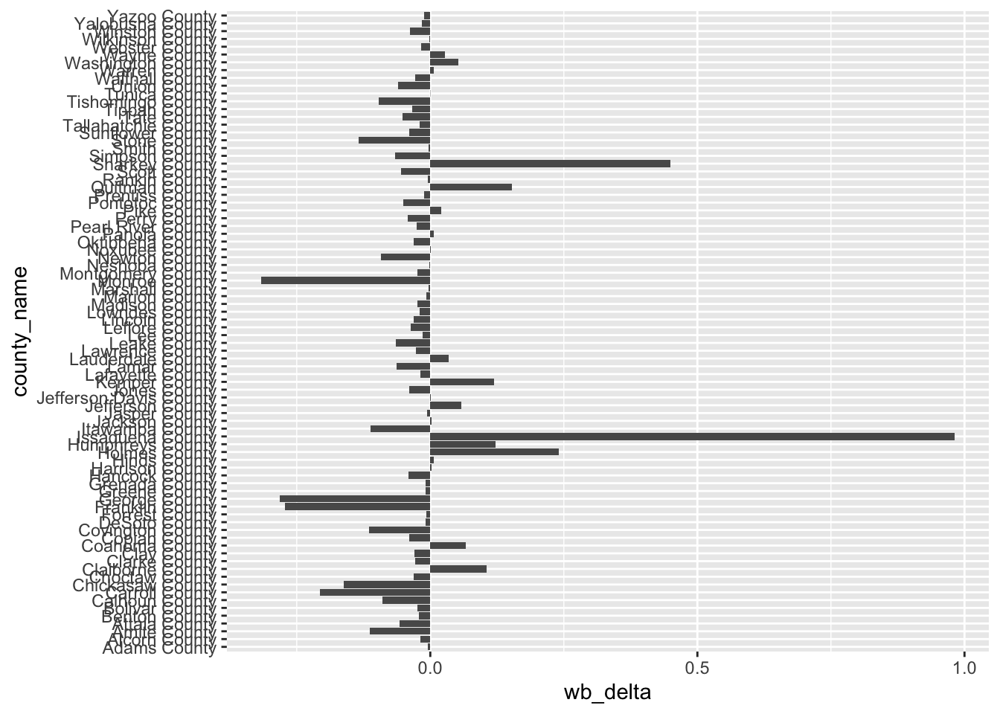
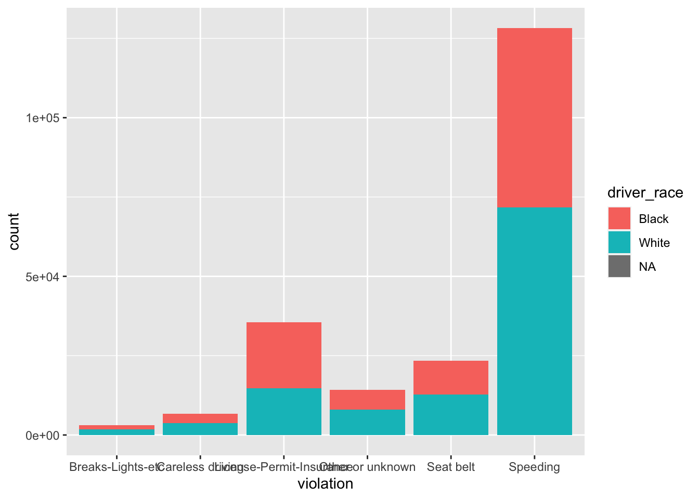
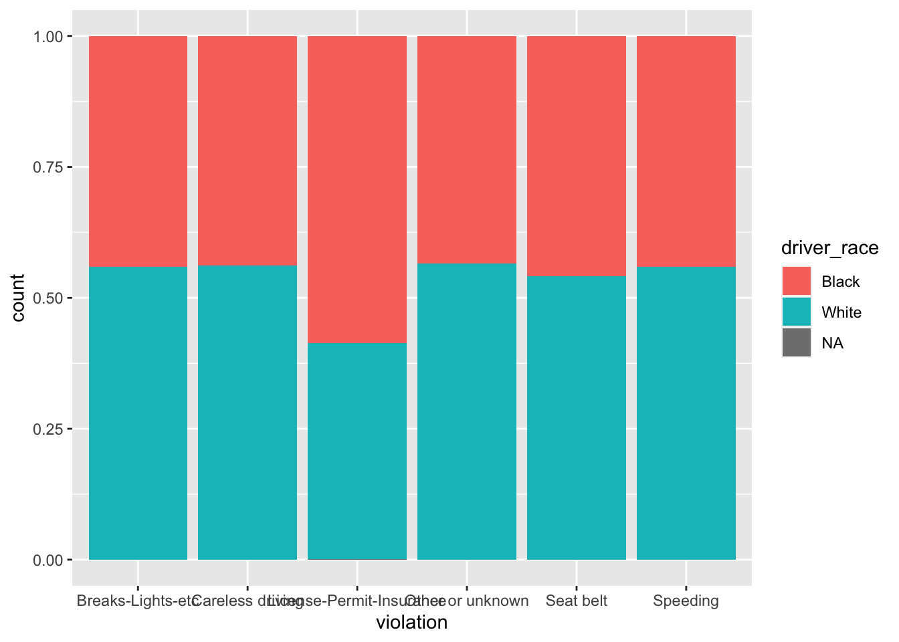

Visualization with ggplot
Presented by William Pang
2022-06-15
This workshop mostly follows a wonderful tutorial created by Claudia Engel, an
academic technology specialist and lecturer in Anthropology at Stanford
University. However, I’ve edited Engel’s tutorial to place more emphasis
behind the syntax logic of ggplot.
Welcome to the second part of this workshop series, where we will be
covering data visualization using a tool called ggplot,
which is part of the tidyverse package. When I first learnt
ggplot on my own, I was quite confused — I came from coding
in MATLAB, which was very literal (for instance, if you wanted to plot a
sine wave with the equation y = sin(t), it was simply
plot(t,y).
The point of me saying all of this is that if you want to express
more complicated ideas, being literal sometimes does not cut it. If a
good novel only included terse very manner-of-fact dialogues, you would
immediately drop the book. Akin to English, we need a set of rules, a
structure of sorts that helps build up a language. This set of “rules”
is called grammar, and as you will notice with ggplot,
there are a lot of idiosyncrasies that might require some blind faith in
the beginning, but upon mastery you will begin to see the power of
ggplot.
Today, we’ll be working with a dataset from the Stanford Open Policing Project, a project that gathers data across the country on traffic stops made by police officers. In particular, we’ll be looking at police stops in Missippi over a span of three years.
We should now know how to read files from our last tutorial, where we
introduced the read_csv function.
bias <- read_csv("https://raw.githubusercontent.com/cengel/R-data-viz/master/data/MS_stops_by_county.csv")## Rows: 82 Columns: 10
## ── Column specification ────────────────────────────────────────────────────────
## Delimiter: ","
## chr (2): county_name, bias
## dbl (8): county_fips, driver_race_Black, driver_race_White, black_pop, white...
##
## ℹ Use `spec()` to retrieve the full column specification for this data.
## ℹ Specify the column types or set `show_col_types = FALSE` to quiet this message.It’s always a good habit to do a quick scan of the data to contextualize what’s happening.
head(bias, n = 2)What’s we’re looking at is a dataset of policing by counties in Mississippi, with some statistics about the number of Black and White drivers being pulled over. The research question from this dataset is whether there is any racial bias in police stopping – perhaps we want to plot some sort of scatterplot comparing the percent of Black stopped vs percent of White stopped.
Before we jump into the coding, the first thing to know about
ggplot is that it works in layers, sort of like a cake! The
bottom layer is your data, and you can layers things on top to make an
increasingly sophisticated graph.

As mentioned, the “base” of your cake is the data.
ggplot(data = bias)If you just plotted this and pressed run, you will be greeted by a grey screen on the R-studio plot. That’s good! We’ve set the “base” for the cake.
Okay, let’s start adding an argument called aes.
aes refers to aesthetic mapping, which is the idea of
linking variables in the data to graphical properties in the geometry.
If you’re working in a cartesian coordinate system, for example, this
tells us where the datapoint links exactly on the plane.
Let’s add a few more arguments.
ggplot(data = bias, aes(x = pct_black_stopped, y = pct_white_stopped))Two things here. First, notice that our arguments for the x and y
axis (i.e., pct_black_stopped and
pct_white_stopped) do not have quotation marks on it. This
shouldn’t come as a surprise to us, especially for those who joined my
session last week on Intermediate R, where we introduced the pipe
operator. Remember that ggplot is under the
tidyverse universe (no pun intended), similar to how
dplyr is part of the tidyverse universe.
The second question you might ask is “where is my data”? Again,
remember we’ve just mapped the data onto the plane, but we
haven’t told ggplot what the graph we want. This is where
the fancy stuff begins to come into play. For a scatterplot, where we
just want dots or points on the graph, we use the function
geom_point().
ggplot(data = bias, aes(x = pct_black_stopped, y = pct_white_stopped)) +
geom_point()Notice the + sign that we had to use, which means that
we’re adding an additional layer to our “cake”. One thing to note is
that the + must be added on the same line of your layer –
if you did something like this, for example, it would not work:
# This does not work
ggplot(data = bias, aes(x = pct_black_stopped, y = pct_white_stopped))
+ geom_point()It also doesn’t really matter if the aes argument goes
into the base layer or to the geom_point layer.
ggplot(data = bias) +
geom_point(aes(x = pct_black_stopped, y = pct_white_stopped))
However, for consistency (and readability), we will stick with
putting the aes argument in the data layer.
You can play around with the geom_point argument — for
instance, you don’t want circles on your graph, but want squares
instead. And while we’re at it, you, the picky customer, might think the
squares are too dark, so you would like to change the opacity.
ggplot(data = bias, aes(x = pct_black_stopped, y = pct_white_stopped)) +
geom_point(shape = 'square', alpha = 0.3) # Notice that we need to put quotations on 'square', as the argument 'square' is not piped from our dataset Anyway, let’s get back to our original research question, which is to
see if there is any bias in police stops. To do this, we should plot a
45\(^\circ\) degree reference line (or
a slope of m = 1 because y = x) on the scatterplot. If the dots fall on
the reference line, this means that there is no bias (e.g., in a county
where 30% of Whites are stopped and 30% of Blacks are also stopped, the
dot would fall on the reference line).
Anyway, let’s get back to our original research question, which is to
see if there is any bias in police stops. To do this, we should plot a
45\(^\circ\) degree reference line (or
a slope of m = 1 because y = x) on the scatterplot. If the dots fall on
the reference line, this means that there is no bias (e.g., in a county
where 30% of Whites are stopped and 30% of Blacks are also stopped, the
dot would fall on the reference line).
We can achieve this with the geom_abline function, which
draws a line from a to b.
ggplot(data = bias) +
geom_point(aes(x = pct_black_stopped, y = pct_white_stopped)) +
geom_abline(slope = 1, intercept = 0, color = 'red') Hmmm, something seems to be off, as what I wanted was the line to cut
diagonally on the plane. This is because the y and x axis are scaled
differently - if we wanted the slope to cut diagonally, the two axis
have to be the same. We can do this using the
Hmmm, something seems to be off, as what I wanted was the line to cut
diagonally on the plane. This is because the y and x axis are scaled
differently - if we wanted the slope to cut diagonally, the two axis
have to be the same. We can do this using the
scale_x_continuous and scale_y_continous
argument.
ggplot(data = bias) +
geom_point(aes(x = pct_black_stopped, y = pct_white_stopped)) +
geom_abline(slope = 1, intercept = 0, color = 'red') +
scale_x_continuous(limits = c(0, 1)) +
scale_y_continuous(limits = c(0, 1)) ## Warning: Removed 1 rows containing missing values (geom_point).Let’s say we were doing some exploratory data analysis and wanted to see data points where less than 10% of White drivers were stopped. Let’s trying highlighting these data points by changing the color on our graph.
ggplot(data = bias, aes(x = pct_black_stopped, y = pct_white_stopped, color = pct_white_stopped < 0.1)) +
geom_abline(slope = 1, intercept = 0, color = 'red') +
scale_x_continuous(limits = c(0, 1)) +
scale_y_continuous(limits = c(0, 1)) +
geom_point()## Warning: Removed 1 rows containing missing values (geom_point).
You might have initially thought that the color argument
would go into the geometries layer. However, this is not the case,
because what we’re doing is creating a new column in our dataset,
creating a TRUE/FALSE statement (i.e., whether the percent of Blacks
stopepd is greater than 0.2), and then mapping it onto the plane using
the geom_point function.
Similarly, if we wanted to change something about the properties of
the dots themselves (say we wanted to change the color), we would put
our arguments into the geom_point function.
ggplot(data = bias, aes(x = pct_black_stopped, y = pct_white_stopped)) +
geom_point(color = 'steelblue')Interesting! Just by visual inspection we see that there’s something
interesting going on there, as a lot of points seem to be aggregated
below the reference line. We can “zoom in” by tweaking
scale_x_continuous and scale_y_continuous:
ggplot(data = bias, aes(x = pct_black_stopped, y = pct_white_stopped, color = pct_white_stopped < 0.1)) +
geom_abline(slope = 1, intercept = 0, color = 'red') +
scale_x_continuous(limits = c(0, 0.1)) +
scale_y_continuous(limits = c(0, 0.1)) +
geom_point()## Warning: Removed 44 rows containing missing values (geom_point).
Here the color argument is redundant because we have scaled
the axis in a way that would only capture pct_white_stopped
to be < 0.1. Notice that we also get a warning that some values are
cut of because we have essentially cropped our graph.
Really, we’ve covered the hardest part of the workshop, which is
getting used to the language and syntax of ggplot. Once we
know how the toolkit belt works, what we’re really doing now is adding
more and more toolkits into the belt. So give yourselves a pat in the
back.
While the scatterplot gives us a good overview, we might want to look
at each of the counties in Mississippi. We can do this by finding the
difference between pct_white_stopped and
pct_black_stopped (i.e.,
pct_white_stopped - pct_black_stopped), and to see whether
there is bias in police stops at each county. This difference has been
calculated and stored under the variable wb_delta, where a
positive \(\Delta\) indicates a bias
towards stopping Whites.
ggplot(data = bias, aes(x = county_name, y = wb_delta)) +
geom_col()Clearly, we can’t distinguish one county from another country - it’s not readable at all. We can fix this problem by flipping the coordinates:
ggplot(data = bias, aes(x = county_name, y = wb_delta)) +
geom_col() +
coord_flip()
Since most people read from top to bottom, we might want to flip the
ordering of county_name so that Adams County is on the
bottom (or further top of the screen — but in graphics the
coordinate system is flipped on the y-axis). Unfortunately, there is no
intuitive solution (such as adding a negative sign before the
county_name). You must use the function
scale_x_discrete and reverse the limits. Note that this
will not work if the x variable is continuous.
ggplot(data = bias, aes(x = county_name, y = wb_delta)) +
geom_col() +
coord_flip() +
scale_x_discrete(limits = rev)Let’s try doing the same thing for the continuous variable
wb_delta, which requires some knowledge of the
idiosyncrasies of ggplot functions. Again, stackoverflow
and Google is your friend here.
ggplot(data = bias, aes(x = county_name, y = wb_delta)) +
geom_col() +
coord_flip() +
scale_y_reverse(limits = c(1,-1)) # You could also just use scale_y_reverse()
We can also reorder the counties by the wb_delta values,
from lowest (indicating Black bias) to highest (indicating White
bias).
ggplot(bias, aes(x = reorder(county_name, -wb_delta), y = wb_delta)) +
geom_col() +
coord_flip() Before I forget to mention, we could also simplify the code a bit (which
I should have done previously, but for illustrative purposes I copied
everything out) by assigning everything before
Before I forget to mention, we could also simplify the code a bit (which
I should have done previously, but for illustrative purposes I copied
everything out) by assigning everything before geom_col()
to p.
p <- ggplot(bias, aes(x = reorder(county_name, -wb_delta), y = wb_delta)) +
geom_col()
p + coord_flip()
Okay, so I think we’ve exhausted this dataset - let’s work with an
extension of the police stops dataset which we will call
reasons.
reasons <- read_csv("https://github.com/cengel/R-data-viz/raw/master/data/MS_stops.csv")## Rows: 211211 Columns: 15
## ── Column specification ────────────────────────────────────────────────────────
## Delimiter: ","
## chr (10): id, state, county_name, police_department, driver_gender, driver_...
## dbl (3): county_fips, driver_age, y_day
## date (2): stop_date, driver_birthdate
##
## ℹ Use `spec()` to retrieve the full column specification for this data.
## ℹ Specify the column types or set `show_col_types = FALSE` to quiet this message.Again, it’s a good habit to look at both the spec output
from read_csv and some techniques I covered last week to
get a good overview of the data.
head(reasons, n = 2)Another way to get to know your data is to build a bar graph,
especially when we’re working with categorical variables. This can be
done with the geom_bar function.
ggplot(data = reasons, aes(x = violation)) +
geom_bar()Notice that we don’t need to specific a y argument for
aes, which makes sense because we are trying to tabulate
the different violation counts. What’s happening here is that the
violation variable gets passed to geom_bar(),
which basically does the job of group_by and
count. This is something we covered last week:
reasons %>% group_by(violation) %>% count()Generally, ggplot has a shortcut construction that can
do what we just illustrated (in the above example, it was
geom_bar). But this is not always the case, and as
such, it’s good to know functions like after_stat, where
you can manually tweak the calculations. For instance, I might be
interested in getting the percentage of each of the violations:
# Convert to percentage
ggplot(data = reasons, aes(x = violation, y = after_stat(count/ sum(count) * 100))) +
geom_bar()We could also change the colors of the bar — but instead of using the
color function, we can use fill.
ggplot(data = reasons, aes(x = violation)) +
geom_bar(fill = "green")But just changing the colors is not that insightful. Say, for instance, we wanted to know how many of speeding violations were incurred by Whites compared to Blacks.
ggplot(data = reasons, aes(x = violation)) +
geom_bar(aes(fill = driver_race))
Here the aes function needs to be called again (i.e.,
geom_bar(fill = driver_race) won’t work). This is similar
to the earlier example, where we wanted to change the
pct_white_stopped colors after we defined a certain
threshold. We could just have included the fill argument in
our data layer.
ggplot(data = reasons, aes(x = violation, fill = driver_race)) +
geom_bar()One more point on this. We could also tell ggplot to stretch the bars between [0,1], and find the proportions of violations that are grouped by race.
# Convert to percentage
ggplot(data = reasons, aes(x = violation)) +
geom_bar(aes(fill = driver_gender), position = "fill")
We’ll now do a gear shift into plotting time series data, which is dear and near to me as I’ve worked on analyzing COVID datasets. In this example, we’re interested in knowing what the type of violations occur on a given day of the week.
To do so, we want to split our datasets into days of the week, and
then split that dataset based on violations. We should now be familiar
with the handy group_by function.
dow_violations <- reasons %>%
group_by(wk_day, violation) %>%
count()
head(dow_violations, n=2)## # A tibble: 2 × 3
## # Groups: wk_day, violation [2]
## wk_day violation n
## <chr> <chr> <int>
## 1 Fri Breaks-Lights-etc 564
## 2 Fri Careless driving 1150Now, let’s try plotting it out.
ggplot(dow_violations, aes(x = wk_day, y = n)) +
geom_line()
Woah! This wasn’t what we wanted! What happened here is that
ggplot displayed the range of values for each day of the
week. Let’s fix this by adding the group argument.
ggplot(dow_violations, aes(x = wk_day, group = violation, y = n)) +
geom_line()That’s better. But we don’t know which line corresponds to which
violation. To do so, we need to use the color function.
ggplot(dow_violations, aes(x = wk_day, group = violation, y = n, color = violation)) +
geom_line()
If you notice the days of the week, they are a bit messed up. As we’ve
seen a few times before, R usually arranges categorical variables (even
date class) by alphabetical order. To fix this problem, we need to
manually specify what the order should be by forcing it as a
factor. Remember that whenever you need variables to be
arranged in a particular order, use factors as factors not only store
the variables of interest, but assigns an index to them.
dow_violations$wk_day <- factor(dow_violations$wk_day,
levels=c("Mon", "Tue", "Wed", "Thu", "Fri", "Sat", "Sun"))Let’s give this another try.
ggplot(dow_violations, aes(x = wk_day, group = violation, y = n, color = violation)) +
geom_line()This is a great segue to facet_wrap, our last subject of
the day. Imagine you wanted separate panels for each violation
classification. What faceting essentially does is split one big plot
into multiple smaller plots, making the plot less confusing and easier
to interpret for the viewer.
Let’s use the facet_wrap function.
ggplot(dow_violations, aes(x = wk_day, y = n, group = violation)) +
geom_line() +
facet_wrap(~ violation)
Notice the ~ tilde. The tilde can be read as “by” -
semantically, this would be equivalent to saying
“I want to make new graphs separated by the cut categories”.
We can force the facet wrap to have 2 columns, i.e., a 2x3 grid.
Let’s also rename the y label to something else other than
n and remove the x label because the day of week is pretty
intutive.
p <- ggplot(dow_violations, aes(x = wk_day, y = n, group = violation)) +
geom_line() +
facet_wrap(~ violation, ncol = 2) +
labs(title = 'Observed violations per day of week',
x = "", # Use "" to remove text on label
y = "Number of violations")Lastly, you can do a small touch of customization to the facet wrapped graphs using different themes.
p + theme_bw()\(\underline{Acknowledgements}\)
As mentioned in the preamble, I relied mainly on Claudia Engel’s R
tutorial series.
Another useful resource I found was Thomas Lin Pedersen’s two-part
Youtube tutorial, which
helped lay a theoretical foundation on the syntax logic behind
ggplot.